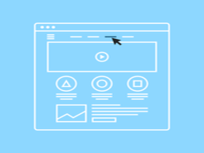

Easy Navigation
Easy Navigation is essential to good web design. It is such an important feature of web design because navigating is one of the main features every website should have. Simple and easy navigation can be achieved by doing things such as, keeping the navigation bar as simple as possible with minimal options. Or by avoiding too many clicks inside the website minimizing the need to search through to find the main features of the webiste. Another good strategy is to mitigate the drop down menu options so that the users do not need to read through so many options to find what they want. Another good tip is too follow real world conventions or use the user's language for naming the options. Avoid using jargons which will only hurt your overall web design and ease of navigation. Another good idea is too observe websites with good navigation such as gmail so that you might learn from them and incorporate some of their good web design principles into your own websites. Following these tips is key to achieving good navigation and therefore good web design.
Comfortable UI
Comfortable UI is another essential to good web design. A UI or user interface is through which a user interacts with the system. It serves as a bridge between the system and the user. If the UI is good then the user will likely spend much more time interacting with it. It is a key principle in good web design to have a nice and clean user interface. Some tips to make a User interface good is to keep it simple, utilize page layout and be consistent with fonts and colors. Another good tip is to keep the information relevant to the topic of your website. Irrevelvant information will only clutter the website and make the overall user interface much more clunky and ugly. By following these tips you can keep your user interface clean and concise and attract much more positive attention to your UI and therefore your website.